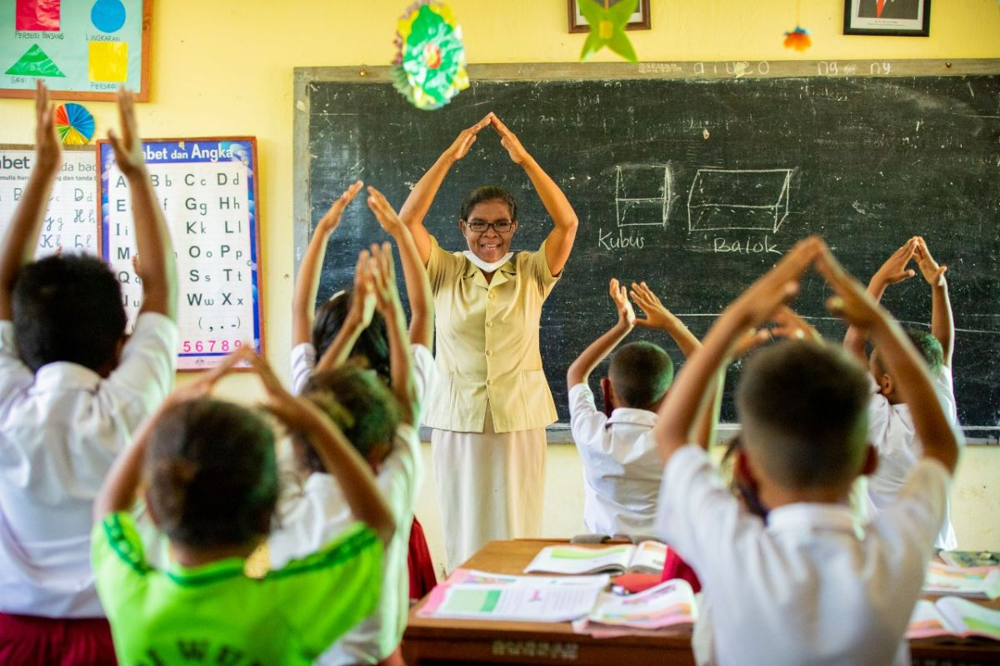
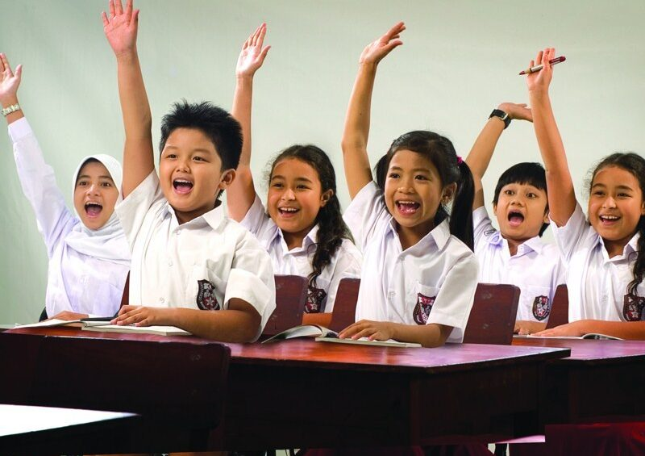

Kerja sama bilateral antara Indonesia dan Kanada di bidang pendidikan dan kebudayaan telah berlangsung cukup lama dan mencakup berbagai aspek, mulai dari program beasiswa, pertukaran pelajar, hingga kolaborasi dalam riset dan kebudayaan. Berikut adalah beberapa poin penting dari kerja sama tersebut:


1. Beasiswa dan Pertukaran Pelajar
Program Beasiswa:
Kanada menyediakan berbagai program beasiswa bagi pelajar internasional, termasuk pelajar dari Indonesia, untuk melanjutkan pendidikan di jenjang sarjana, magister, dan doktoral di universitas-universitas ternama Kanada.
Program seperti Canada-ASEAN Scholarships and Educational Exchanges for Development (SEED) sering dimanfaatkan oleh pelajar Indonesia untuk studi atau riset jangka pendek di Kanada.
Di sisi lain, Indonesia melalui program Darmasiswa dan Kemitraan Negara Berkembang (KNB) juga menawarkan beasiswa bagi pelajar Kanada yang tertarik untuk belajar bahasa Indonesia dan kebudayaan di berbagai universitas di Indonesia.
Pertukaran Pelajar dan Akademik:
Banyak universitas di Indonesia yang memiliki kesepakatan pertukaran pelajar dengan universitas di Kanada. Program pertukaran ini biasanya berlangsung selama satu semester atau satu tahun akademik dan mencakup bidang studi seperti teknologi, bisnis, ilmu sosial, dan humaniora.
Program Canada-World Youth juga mendukung pertukaran pemuda yang melibatkan partisipasi pemuda Indonesia dalam proyek-proyek sosial dan budaya di Kanada.
2. Kolaborasi dalam Riset dan Inovasi
Penelitian Bersama:
Universitas-universitas di Indonesia, seperti Universitas Indonesia (UI), Institut Teknologi Bandung (ITB), dan Universitas Gadjah Mada (UGM), telah menjalin kerja sama dengan beberapa universitas di Kanada, seperti University of British Columbia (UBC), University of Toronto, dan McGill University, dalam berbagai proyek penelitian.
Bidang penelitian yang sering menjadi fokus kerja sama meliputi ilmu lingkungan, teknologi informasi, kesehatan masyarakat, dan perubahan iklim.
Inisiatif Pendidikan dan Teknologi:
Kedua negara berkolaborasi melalui program-program yang bertujuan meningkatkan kapasitas akademik dan inovasi teknologi. Misalnya, kerja sama dalam pengembangan e-learning dan teknologi pendidikan untuk meningkatkan akses terhadap pendidikan berkualitas di daerah terpencil di Indonesia.
Kanada juga turut serta dalam proyek-proyek yang mendukung pengembangan pendidikan vokasi dan peningkatan keterampilan di Indonesia melalui program pelatihan dan bimbingan teknis.
3. Promosi Bahasa dan Kebudayaan
Bahasa Indonesia di Kanada:
Beberapa universitas di Kanada menawarkan program studi tentang Indonesia, termasuk bahasa Indonesia dan studi Asia Tenggara. Kegiatan ini membantu memperkenalkan bahasa dan budaya Indonesia kepada mahasiswa dan masyarakat Kanada.
Festival Kebudayaan:
Kedutaan Besar Indonesia di Kanada secara rutin mengadakan acara kebudayaan seperti Indonesian Cultural Day, yang memamerkan seni tari, musik tradisional, kerajinan tangan, dan kuliner Indonesia. Acara ini bertujuan untuk mempromosikan kekayaan budaya Indonesia di Kanada.
Di sisi lain, komunitas Kanada di Indonesia sering mengadakan acara seperti Canada Day, yang memperkenalkan budaya Kanada, termasuk musik, makanan, dan kegiatan sosial lainnya.
Pameran dan Pertunjukan Seni:
Pertunjukan seni dan pameran budaya sering diadakan oleh lembaga budaya kedua negara, seperti Canadian Cultural Centre dan Indonesian Arts Foundation. Mereka mempromosikan pertukaran seniman dan budaya melalui pameran seni rupa, konser musik, dan pertunjukan tari.
4. Pengembangan Kurikulum dan Pendidikan Tinggi
Kerja Sama Kurikulum Pendidikan:
Kanada bekerja sama dengan Kementerian Pendidikan, Kebudayaan, Riset, dan Teknologi Indonesia dalam proyek pengembangan kurikulum berbasis keterampilan untuk pendidikan tinggi. Inisiatif ini bertujuan untuk mempersiapkan lulusan dengan keterampilan yang relevan dengan pasar kerja global.
Program Curriculum Enhancement yang dilakukan oleh universitas-universitas Kanada memberikan pelatihan bagi dosen dan pengajar Indonesia dalam pengembangan kurikulum yang lebih praktis dan berorientasi pada pasar.
Program Pengembangan Kapasitas:
Melalui organisasi seperti Canadian International Development Agency (CIDA), Kanada telah mendanai berbagai proyek yang bertujuan meningkatkan kapasitas pendidikan di Indonesia, termasuk pengembangan sekolah-sekolah di daerah pedesaan dan pelatihan guru.
5. Kolaborasi dalam Kebijakan Pendidikan
Diskusi dan Pertemuan Bilateral:
Pertemuan reguler antara pejabat pendidikan Indonesia dan Kanada membahas kebijakan pendidikan dan potensi kolaborasi yang lebih luas, termasuk dalam bidang digitalisasi pendidikan, pembelajaran jarak jauh, dan peningkatan akses pendidikan bagi kelompok rentan.
Kanada juga berbagi praktik terbaik dalam sistem pendidikan yang inklusif, menginspirasi beberapa reformasi kebijakan pendidikan di Indonesia.